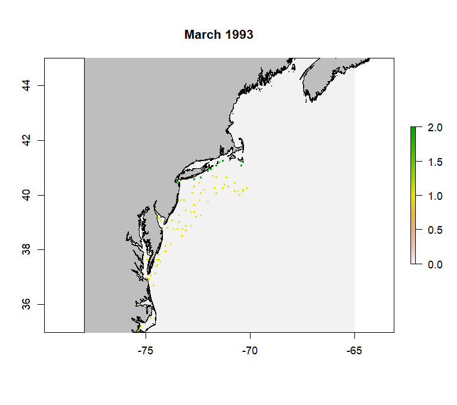

exposure <- calcExposure(presentRasts, futureRasts)Calculating Exposure
Overview
Exposure is calculated from MOM6 forecast data using the same methods to calculate and rank raw exposure as the CVA1.0 on the MOM6 environmental data. We then use the predicted species distributions and the relative importance of covariates in the ensemble models to calculate variable-specific and total exposure for each species.
Calculating and Ranking Raw Exposure
As in the CVA1.0, raw exposure for each environmental variable is calculated using a z-score, which is the difference in mean conditions in a future and present timeseries divided by present day standard deviations.
The function calcExposure will take the output from pull_hind and/or pull_forecast (a list of rasterStacks) and calculate monthly raw exposure for each environmental variable in the list:
Where presentRasts and futureRasts are lists of rasterStacks with the same length. These are the raw timeseries over the desired time periods. Remember that pull_hind and pull_forecast pull the complete timeseries for the desired MOM6 run, so you will need to subset their outputs accordingly if desired. calcExposure will produce a list of rasterStacks with the same length as the provided lists. Each rasterStack will have 12 layers, one for each month. 
The next step is to rank the raw exposure. Since the CVA is designed to help determine which species are at risk to the greatest exposure, these ranks are based on this goal, rather than the distribution of the data themselves. We use the same ranks as the CVA1.0:
| Score | Raw Exposure | Rank |
|---|---|---|
| Low | < 0.5 | 1 |
| Medium | 0.5 - 1.5 | 2 |
| High | 1.5 - 2 | 3 |
| Very High | > 2 | 4 |
The function rankExposure performs the ranking. It also provides the option to multiply raw exposure values for certain by -1 (aka flip). This option was included because the direction of change and the meaning of that change may differ across environmental variables. For example, an increase in surface temperatures would have a positive exposure, whereas a decrease in pH would have a negative exposure; both changes are considered bad for the environment, but the signs differ due to how these variables are quantified. The flip and noFlipList options provide the option to flip the signs of raw exposure for all variables except those listed in noFlipList.
expRanked <- rankExposure(exposure, flip = T, noflipList = c('bottomT', 'surfaceT', 'bottomArg', 'MLD'))Creating Species-Specific Exposure Time Series and Maps for Each Variable
Once raw exposure is ranked, species-specific exposure for each environmental variable can be calculated using the functions makeExposureTimeseries and makeExposureMaps. These functions are nearly identical and only require the ranked exposure values and the mean ensemble species distribution model (SDM) predictions. Ranked exposure values are averaged across space within each month in makeExposureTimeseries and averaged across months in each model grid cell in makeExposureMaps, using the SDM results as weights to account for species distributions and habitat use. The results are a time series of average ranked species-specific exposure within each month and a raster of average species-specific exposure across time for each environmental variable.
#map
mapExp <- makeExposureMaps(rankExp = expRanked, sdmRast = avgHSM)
#timeseries
vecExp <- makeExposureTimeseries(rankExp = expRanked, sdmRast = avgHSM)The ensemble SDM results produced by make_predictions should be converted into a monthly average prior to using makeExposureTimeseries and makeExposureMaps. It is also recommended that you remove low SDM values after averaging. In the NE Shelf CVA2.0, we removed all SDM values less than 0.1 (representing areas with less than a 10% likelihood of finding the species). Not removing these low values resulted in higher than expected exposure results in areas where the species is rare.
The wrapper function makeVariableAverages is provided and can be run in parallel using the furrr package, similar to the SDM wrapper functions. Like those wrapper functions, your directory must be set up according to the Installation and Setup Guide provided for them to function. makeVariableAverages also generates the monthly average SDM results, and removes low values for you.
plan(multisession, workers = 6)
checks <- future_pmap(list(..1 = args$spp, ..2 = args$ensName, ..3 = args$pStart, ..4 = args$pEnd, ..5 = args$fStart, ..6 = args$fEnd), ~ makeVariableAverages(spp = ..1, ensName = ..2, pStart = ..3, pEnd = ..4, fStart = ..5, fEnd = ..6), .progress = T, .options = furrr_options(seed = 2025))
plan(sequential)Like the SDM wrapper functions, args is a dataframe where each row is a set of arguments to be passed to the function. Here, the arguments include the species name (spp), ensemble name to help locate the appropriate ensemble model (ensName), and start and end years for the present and future timeseries (pStart/pEnd/fStart/fEnd) to load in the correct exposure values, as well as save the results from makeExposureTimeseries and makeExposureMaps appropriately. These are not memory or time-intensive calculations, so it is not necessary to run them in parallel - it is just helpful if you have a lot of species to work through.
The output from makeExposureTimeseries is a matrix with 12 columns (1 for each month) and a number of rows equal to the number of environmental variables in expRanked. makeExposureMaps produces a rasterStack, with each layer representing one of the environmental variables. Values should range from 1 to 4.
Calculating Total Exposure for Each Species
Once you have the species-specific exposure calculated for each variable, they must be combined to estimate total species-specific exposure. These will be the final spatially and temporally explicit values that are combined with species sensitivity to estimate vulnerability.
To combine the species-specific exposures for each variable, we use the same logic rule as the CVA1.0:
| Overall Score | Numeric Score | Logic Rule |
|---|---|---|
| Low | 1 | All other scores |
| Medium | 2 | 2 or more attributes >= 2.5 |
| High | 3 | 2 or more attributes >= 3.0 |
| Very High | 4 | 3 or more attributes >= 3.5 |
We calculate total exposure in two ways: 1) Applying the logic rule to all ecologically relevant environmental variables as defined by the feeding and habitat keys and 2) Only applying the logic rule to ecological variables that have relative weights in the final ensemble SDM greater than a set value (for the NE Shelf CVA2.0, we chose 10% or 0.1). This was done to account for possible unknown changes in variable importance under future climate change. The latter method (only counting the most important variables), assumes that these values will continue to be very important under future climate change scenarios. It is unclear if this will be the case, especially for variables such as pH where it is unclear how they will impact species. Calculating total exposure using all the ecologically relevant variables allows us and stakeholders to consider all variables regardless of their model importance.
The functions combineTimeseries and combineMaps provide options for both methods with the option countAll. If set to TRUE, you will need to provide the relative weights and the threshold to use to count variables. Setting countAll to FALSE will automatically count all provided variables in matExp for combineTimeseries or mapExp for combineMaps, which are the outputs from makeExposureTimeseries and makeExposureMaps, respectively. It is important that, if you have not yet done so, that you subset matExp and mapExp to only the ecologically relevant variables before running the combineTimeseries and combineMaps functions. This can be done using the relative weights of the variables.
The function combineWeights estimates the relative variable importance across the models. Since every component model of the ensemble SDM estimates variable importance differently, all importance data is normalized to their respective sums such that they total 1. A weighted average is then performed across models using the weights of each component model in the ensemble. The result is a vector of values representing the relative importance of each of the ecologically relevant variables to the model.
cW <- combineWeights(vars = vars, ensWeights = weights, impFlist = iFlist, staticNames = staticVars)Where vars is a vector of character strings including the ecologically relevant variables, ensWeights is the weights of each component model of the ensemble model generated by make_sdm, impFlist is a vector of character strings including the file paths to the model variable importance files made by sdm_importance, and staticNames are the names of any static environmental variables to be excluded.
The names of the vector resulting from combineWeights can be used to subset the outputs from makeExposureTimeseries and makeExposureMaps, since these output contain all possible environmental variables from MOM6, before running combineTimeseries and combineMaps.
#subset timeseries matrix by rownames
i <- rownames(vecExp) %in% names(cW)
vecSub <- vecExp[i,]
#timeseries
totalTA <- combineTimeseries(matExp = vecSub, weights = cW, wThreshold = 0, countAll = T) #counting all variables
totalTS <- combineTimeseries(matExp = vecSub, weights = cW, wThreshold = 0.1, countAll = F) #counting only ecologically relevant variables
#subset mapExp by rownames
i <- names(mapExp) %in% names(cW)
mapSub <- raster::subset(mapExp, which(i == T))
#maps
totalM <- combineMaps(mapExp = mapSub, weights = cW, wThreshold = 0, countAll = T)
totalMS <- combineMaps(mapExp = mapSub, weights = cW, wThreshold = 0.1, countAll = F)